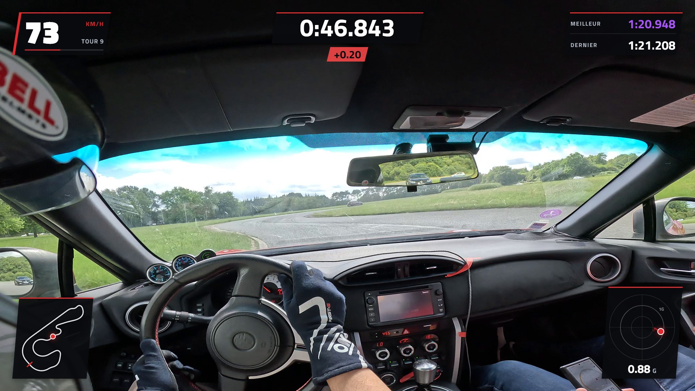
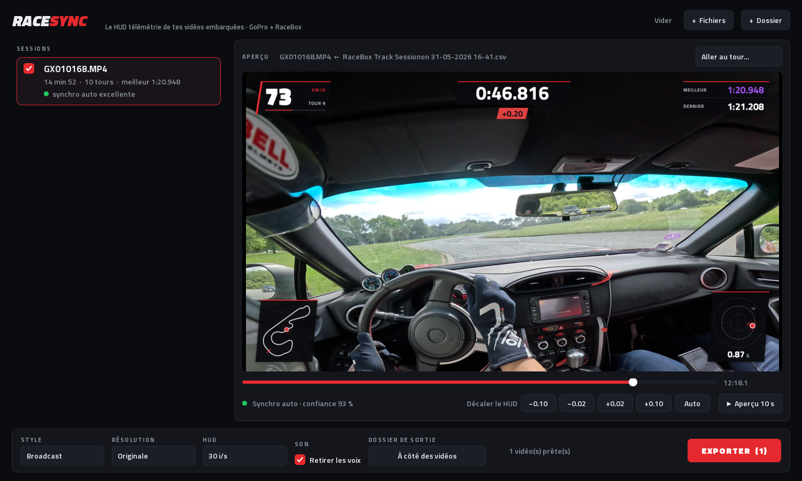

GoPro + RaceBox ou RaceChrono · gratuit et libreGoPro + RaceBox or RaceChrono · free and open source
Ton onboard,
avec un HUD de F1.
Your onboard,
with an F1 HUD.
Glisse tes vidéos GoPro et tes sessions RaceBox dans LapHUD. Il retrouve quelle vidéo va avec quelle session, les synchronise au centième et incruste vitesse, chrono, delta, meilleur tour, tracé et G. Sans filigrane, sans compte, sur ton PC.
Drop your GoPro videos and RaceBox sessions into LapHUD. It works out which video goes with which session, syncs them to a hundredth of a second and burns in speed, lap timer, delta, best lap, track map and G-forces. No watermark, no account, all on your computer.

Ce que LapHUD fait à ta placeWhat LapHUD does for you
Synchro automatiqueAutomatic sync
L'heure GPS de la GoPro peut être fausse d'une seconde. LapHUD compare l'accéléromètre de la caméra à celui du RaceBox : freinages et virages ont la même signature. Caméra sur le casque ou sur l'arceau, avec ou sans GPS.
The GoPro's GPS clock can be a full second off. LapHUD matches the camera's accelerometer against the RaceBox's: braking and cornering leave the same signature in both. Helmet or roll-cage mount, with or without GPS lock.
Chronos au millièmeLap times to the millisecond
Le temps au tour est calculé à l'instant exact du passage de la ligne, pas arrondi à l'image près. Vérifié contre l'app RaceBox : 1:20.637 contre 1:20.62 affiché.
Each lap is timed at the exact moment you cross the line, not rounded to the nearest video frame. Checked against the RaceBox app: 1:20.637 vs 1:20.62 displayed.
Pas de spoilerNo spoilers
Le meilleur tour et le delta n'affichent que ce qui s'est déjà passé. Le delta compare ta position sur la trajectoire de ton meilleur tour, pas juste la distance.
Best lap and delta only show what has already happened. The delta compares your position along your best lap's racing line, not just distance travelled.
Net et fluideSharp and smooth
HUD dessiné à la résolution de la vidéo, 30 ou 60 images/s. Encodage accéléré NVIDIA, AMD, Intel ou Apple. Option pour retirer les voix et garder le moteur.
The HUD is drawn at the video's own resolution, at 30 or 60 fps. Hardware encoding on NVIDIA, AMD, Intel or Apple. Optional voice removal that keeps the engine sound.
En trois étapesThree steps
Exporte ta session RaceBoxExport your RaceBox session
Depuis l'app ou le site RaceBox, télécharge la session en CSV avec les réglages ci-dessous. Avec RaceChrono : Exporter → CSV (v3).
From the RaceBox app or website, download the session as a CSV with the settings below. With RaceChrono: Export → CSV (v3).
Glisse tout dans LapHUDDrop everything into LapHUD
Vidéos et CSV en vrac, ou un dossier entier. Chaque vidéo trouve sa session ; la pastille verte confirme la synchro.
Videos and CSVs in any order, or a whole folder. Each video finds its session; a green dot confirms the sync.
Vérifie et exporteCheck and export
Aperçu sur ta vidéo, réglage fin si tu veux chipoter, puis export de toute la file. La vidéo sort à côté de l'originale.
Preview on your footage, fine-tune if you want to, then export the whole queue. Each video is saved next to the original.
Export RaceBoxRaceBox export
| Format | CSV · Custom |
| Time column format | Full Date/Time in UTC |
| Speed column format | Kilometers/Hour |
| Include session description header | nonoff |
| Bike Mode | nonoff |
L'applicationThe app

Trois styles de HUD : Broadcast façon télé F1, Carbone plus discret, Épuré sans panneaux. L'aperçu montre le HUD sur ta vidéo avant l'export. Interface et HUD en français ou en anglais, et petite signature « made with LAPHUD » en option.
Three HUD styles: Broadcast, like F1 on TV, the more discreet Carbon, and Clean with no panels. The preview shows the HUD on your footage before you export. App and HUD in English or French, with an optional small “made with LAPHUD” mark.
Un export interrompu ne laisse jamais de fichier à moitié écrit, et le PC ne se met pas en veille pendant le travail. Priorité basse : tu peux jouer pendant que ça tourne.
An interrupted export never leaves a half-written file, and the computer won't go to sleep mid-job. It runs at low priority, so you can keep gaming while it works.
TéléchargerDownload
Windows
Windows 10 et 11. Tout est inclus, ffmpeg compris : décompresse et lance LapHUD.exe.
Windows 10 and 11. Everything is included, ffmpeg too: unzip and run LapHUD.exe.
macOS
Mac à puce Apple. Installe ffmpeg avec brew install ffmpeg. Premier lancement : clic droit sur l'app → Ouvrir.
Apple Silicon Macs. Install ffmpeg with brew install ffmpeg. First launch: right-click the app → Open.
Linux
x86-64. Installe ffmpeg avec sudo apt install ffmpeg, décompresse et lance LapHUD/LapHUD.
x86-64. Install ffmpeg with sudo apt install ffmpeg, extract and run LapHUD/LapHUD.
L'application n'est pas signée (une signature coûte de l'argent, LapHUD est gratuit) : Windows et macOS afficheront un avertissement au premier lancement. Caméras : GoPro HERO5 et plus récentes. Données : RaceBox Mini, Mini S et Micro, ou RaceChrono (export CSV v3). Toutes les versions sont sur la page des releases.
The app isn't code-signed (signing costs money and LapHUD is free), so Windows and macOS will show a warning on first launch. Cameras: GoPro HERO5 and newer. Data: RaceBox Mini, Mini S and Micro, or RaceChrono (CSV v3 export). Every version is on the releases page.